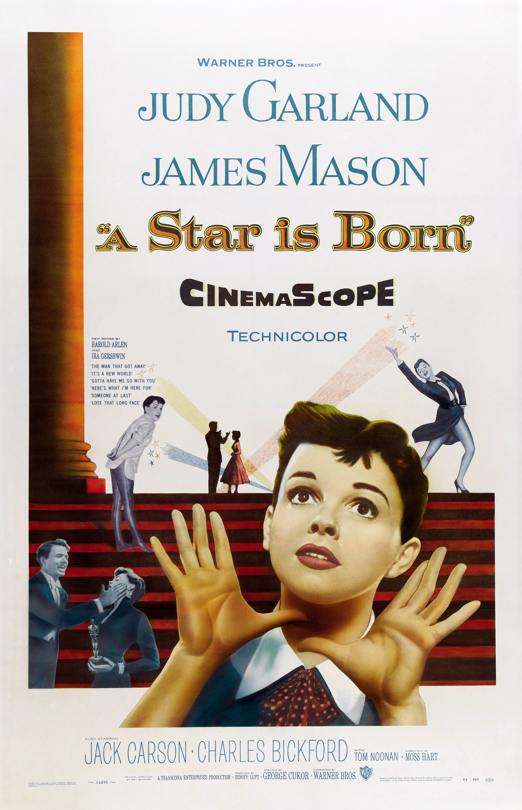

A Star Is Born
27th Academy Awards
(Oscars 1955)
6 Nominations, 0 Awards
| Nominations | ||
|---|---|---|
| Category | Nominees | Result |
| Actor | James Mason | Nominated |
| Actress | Judy Garland | Nominated |
| Art Direction (Color) | Gene Allen, George James Hopkins, Irene Sharaff, and Malcolm Bert | Nominated |
| Costume Design (Color) | Irene Sharaff, Jean Louis, and Mary Ann Nyberg | Nominated |
| Music (Scoring of a Musical Picture) | Ray Heindorf | Nominated |
| Music (Song) "The Man That Got Away" |
Harold Arlen and Ira Gershwin | Nominated |